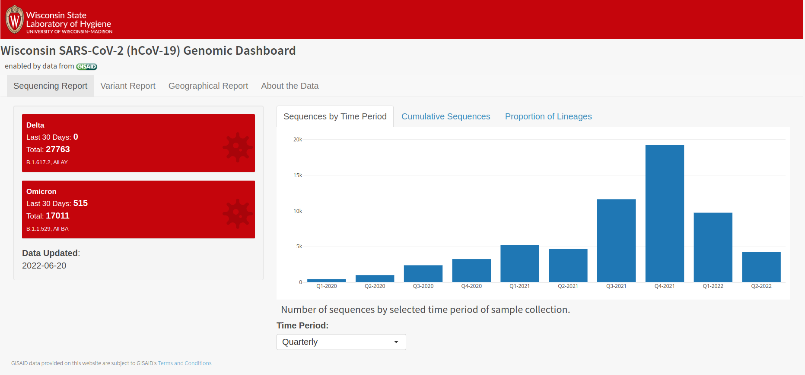
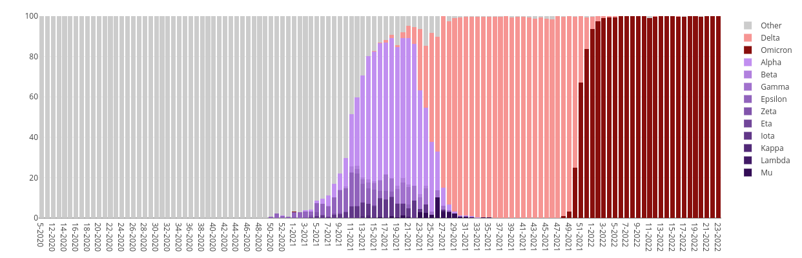

Viewing the SARS-CoV-2 pandemic through a genomic lens
Kelsey Florek, PhD, MPH Senior Genomics and Data Scientist Wisconsin State Laboratory of Hygiene June 27, 2022
www.k-florek.net/talks @kelsey_florek
Classification of an evolving virus
Key components of dynamic viral classification
- capture local and global patterns of genetic diversity in a timely and coherent manner
- track emerging lineages and their movement
- robust and flexible to changes in viral diversity
- ability to incorporate the emergence and disappearance of lineages over time
Nextclade
- A VOC or VOI is recognized by the WHO and given a Greek letter label
- A clade reaches >20% global frequency for 2 or more months
- A clade reaches >30% regional frequency for 2 or more months
- A clade shows consistent >0.05 per day growth in frequency where it is circulating and has reached >5% regional frequency
Pangolin
- Pango Committee maintains the "rules" of the nomenclature system
- Pango lineages are designed to represent the branches of the pandemic tree
- Pango lineages are intended to highlight epidemiologically-relevant events
- Pango lineages can be classified through two major methods
- pangoLEARN: random forest based decision model
- UShER: sample placement on pre-existing phylogenetic trees
WHO Naming Convention
Currently circulating variants of concern (VOCs):
WHO label | Pango lineage• | GISAID clade | Nextstrain clade | Additional amino acid changes monitored° | Earliest documented samples | Date of designation |
|---|---|---|---|---|---|---|
| Omicron* | B.1.1.529 | GR/484A | 21K, 21L, 21M, , 22A, 22B, 22C
| +S:R346K +S:L452X +S:F486V | Multiple countries, Nov-2021 | VUM: 24-Nov-2021 VOC: 26-Nov-2021 |
* Includes BA.1, BA.2, BA.3, BA.4, BA.5 and descendent lineages. It also includes BA.1/BA.2 circulating recombinant forms such as XE. WHO emphasizes that these descendant lineages should be monitored as distinct lineages by public health authorities and comparative assessments of their virus characteristics should be undertaken.
The full list of Pango lineages can be found here: https://cov-lineages.org/lineage_list.html; for FAQ, visit: https://www.pango.network/faqs/
° Only found in a subset of sequences
Previously circulating VOCs:
WHO label | Pango lineage• | GISAID clade | Nextstrain clade | Earliest documented samples | Date of designation |
|---|---|---|---|---|---|
Alpha | B.1.1.7 | GRY | 20I (V1) | United Kingdom, | VOC: 18-Dec-2020 Previous VOC: 09-Mar-2022 |
| Beta | B.1.351 | GH/501Y.V2 | 20H (V2) | South Africa, May-2020 | VOC: 18-Dec-2020 Previous VOC: 09-Mar-2022 |
| Gamma | P.1 | GR/501Y.V3 | 20J (V3) | Brazil, Nov-2020 | VOC: 11-Jan-2021 Previous VOC: 09-Mar-2022 |
| Delta | B.1.617.2 | G/478K.V1 | 21A, 21I, 21J | India, Oct-2020 | VOI: 4-Apr-2021 Previous VOC: 7-Jun-2022 |
*Includes all descendent lineages.
Current SARS-CoV-2 Situation Report
Wisconsin SARS-CoV-2 Genomic Dashboard
Wisconsin Lineages
Emergence of Omicron
Three Theories
- Undetected Spread
- Animal Reservoir (Mouse/Rat)
- Chronic Infection
Omicron Today
Omicron Today
Omicron Today
"Importantly, BA.2.12.1 and BA.4/BA.5 display stronger neutralization evasion than BA.2 against the plasma from 3-dose vaccination and, most strikingly, from post-vaccination BA.1 infections."
Summary
- The adaptive landscape for SARS-CoV-2 has been difficult to predict or measure.
- It is very likely we will see new immune escape variants continue to emerge.
- Increases in at home testing has the potential to bias genomic surveillance.
Challenges in the application of genomic surveillance data
Public Health is currently a series of Data Silos
Integrating environmental, epidemiological, and genomic data with a data lake
data lake: centralized repository designed to store, process, and secure large amounts of structured and unstructured data at any scale
- Data Lakes retain all data
- Support all data types
- Adapt easily to changes
- Require data scientists to navigate
- Require proper management to prevent a data swamp
Integrated data better supports public health
- Identify correlations between genetic variants and vaccination breakthroughs or increased symptom severity.
- Faster and more informed outbreak response.
- Application of machine learning models and AI to identify genomic patterns.
- Big data enables the application of precision public health efforts.
Acknowledgments
- WSLH Virus Sequencing Group
- Tim Davis
- Rich Griesser
- Kyley Guenther
- Erika Hanson
- Special Thanks
- Erika Hanson